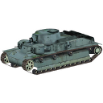
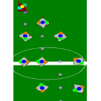

|
|
A. Gerdelan, Illustrated by Katja Žibrek,
"Professional Programming Tools for C and C++",
book, 146 pages, Amazon, May 2020. ISBN 1527258483. print and
digital
|
|
T. Costigan, A. Gerdelan, E. Carrigan, R. McDonnell,
"Improving Blendshape Performance for Crowds with GPU and GPGPU Techniques",
in proc. 9th International Conference on Motion in Games, Burlingame, California, July 2016.
[pdf] |
|
A. Gerdelan,
"Anton's OpenGL 4 Tutorials",
book, 452 pages, Amazon, July 2014. Kindle [amazon.com], ePub and MOBI [itch.io]
|
|
K. McGlinn, A. Gerdelan, K. Jones, D. Lewis,
"Web-Based Visualisation for Energy Management of Buildings",
in proc. International Conference on Applied Energy, Pretoria, South Africa, July 2013.
|
|
G. Anzaldi, A. Corchero, H. Wicaksono, K. McGlinn, A. Gerdelan, M. J. Dibley,
"Knoholem: Knowledge-Based Energy Management for Public Buildings Through Holistic Information Modeling and
3D Visualization",
in proc. 2nd INTERA Conference, Oviedo, Spain, March 2013.
|
|
A. Gerdelan, K. Hawick, A. Leist, and D. P. Playne,
"Simulation Frameworks for Virtual Environments",
in proc. ICOMP'11, Las Vegas, USA, July 2011. |
|
A. Gerdelan,
"Fuzzy Motion Controllers and Hybrids",
PhD thesis, Massey University, New Zealand, June 2011.
[pdf] |
|
A. Gerdelan, K. Hawick, A. Leist, and D. P. Playne,
"Simulation Frameworks for Virtual Environments",
tech report CSTN-127, Complex Systems and Simulations Group, Massey University, New Zealand, March 2011.
[www] |
|
A. Gerdelan,
"MechBench: Benchmarking Motion Control of Vehicles with Mechanical Constraints",
tech report CSTN-124, Complex Systems and Simulations Group, Massey University, New Zealand, January 2011.
[www] |
|
A. Gerdelan,
"Mechanix: Vehicle Mechanical Simulation",
tech report CSTN-118, Complex Systems and Simulations Group, Massey University, New Zealand, November 2010.
[www] |
|
A. Gerdelan,
"A Brief History of Motion Control in Animation",
tech report CSTN-105, Complex Systems and Simulations Group, Massey University, New Zealand, August 2010.
[www] |
|
A. Gerdelan and C. O'Sullivan,
"A Genetic-Fuzzy System for Optimising Agent Steering",
Computer Animation and Virtual Worlds (CASA'10), 21, (3-4), pp. 453-461, May 2010.
[www]
|
|
R. Smyth, H. Rice, P. McDonald, and A. Gerdelan,
"Simulation of Vehicle Noise in the Virtual City",
in proc., Internoise 2010, Lisbon, Portugal, June 2010.
[pdf]
|
|
C. Ennis, A. Gerdelan, and C. O'Sullivan,
"Plausible Methods for Populating Virtual Scenes",
workshop CASA'10, Sant-Malo, France, June 2010.
[pdf] |
|
S. Paris, A. Gerdelan, and C. O'Sullivan,
"CA-LOD: Collision Avoidance Level of Detail for Scalable, Controllable Crowds",
Lecture Notes in Computer Graphics (Motion in Games'09), pp. 13-28, November 2009.
[pdf] |
|
A. Gerdelan,
"Auto-Training Animated Character Motion: A Rule-Base Tuning Hybrid Fuzzy-Genetic Algorithm",
tech report CSTN-098, Complex Systems and Simulations Group, Massey University, New Zealand, June 2009.
[www] |
|  |
Anton Gerdelan
"Architecture design for self-training intelligent vehicle-driving agents: paradigms and tools",
tech report CSTN-088, Complex Systems and Simulations Group, Massey University, New Zealand, April 2009.
[www] |
|
A. Gerdelan,
"Driving Intelligence: A New Architecture and Novel Hybrid Algorithm for Next-Generation Urban Traffic
Simulation",
tech report CSTN-079, Complex Systems and Simulations Group, Massey University, New Zealand, February 2009.
[www] |
|
A. Gerdelan,
"A solution for streamlining intelligent agent-based traffic into 3D simulations and games",
tech report CSTN-072, Complex Systems and Simulations Group, Massey University, New Zealand, January 2009.
[www] |
|
A. Gerdelan, and N. Reyes,
"Towards A Generalised Hybrid Path-Planning and Motion Control System with Auto-Calibration for Animated
Characters in 3D Environments",
Advances in Neuro-Information Processing, 21, pp. 25-28, November 2008.
[www] |
|
D. Playne, A. Gerdelan, A. Leist, C. Scoggings, and K. Hawick,
"Simulation Modelling and Visualisation: Toolkits for Building Artificial Worlds",
RLIMS, 12, pp. 25-50, March, 2008.
|
|
A. Gerdelan,
"Grid-Ireland and Irish e-Research Strategy: A Review for KAREN and BESTGrid",
Community Reports, KAREN (Kiwi Advanced Research and Education Network),
New Zealand, September 2008.
|
|
K. Hawick, and A. Gerdelan,
"Software Integration Architectures for Agents",
tech report CSTN-054, Complex Systems and Simulations Group, Massey University, New Zealand, May 2008.
[www] |
|
D. Playne, A. Gerdelan, A. Leist, C. Scoggings, and K. Hawick,
"Simulation Modelling and Visualisation: Toolkits for Building Simulated Worlds",
tech report CSTN-052, Complex Systems and Simulations Group, Massey University, New Zealand, March 2008.
[www] |
|
C. Messom, A. Sarrafzadeh, A. Gerdelan, M. Johnson, and J. Shanbehzadeh,
"Operating System Virtualisation to support E-learning with Affective Intelligent Tutoring Systems",
in proc. IIT'07, Dubai, United Arab Emirates, pp. 143-147, November 2007.
[www] |
|
C. Messom, A. Sarrafzadeh, A. Gerdelan, and M. Johnson,
"Operating System Virtualisation for Management and Delivery of E-Learning",
in proc. E-Learn'07, pp. 7267-7273, Quebec City, Canada, October 2007.
[pdf]
|
|
A. Gerdelan, M. Johnson, C. Messom,
"Performance Analysis of Virtualised Head Nodes Utilising Cost-Effective Network Attached Storage",
in proc. APAC'07, Perth, Australia, October 2007.
(Best paper and best presentation awards).
[pdf]
|
|
A. Gerdelan, D. Iskandar, A. Djohar, and N. Reyes,
"Utilising the Hybrid Fuzzy A* Algorithm in a Cooperative Multi-Agent System",
in proc. NCEI'06 and HIS'06, Auckland, New Zealand, December 2006. |
|
A. Gerdelan,
"A Novel Motor Control Algorithm for Two-Wheeled and Caterpillar-Tracked Autonomous Vehicles Using a Fuzzy
Navigation Abstraction",
tech report, Engineering Honours Journal Articles, School of Engineering, Massey University, New Zealand,
November 2006.
|
|
A. Gerdelan,
"Artificial Intelligence in Robot Soccer",
honours thesis, School of Engineering, Massey University, New Zealand, October 2006.
|
|
A. Gerdelan, and N. Reyes,
"Synthesizing Adaptive Navigational Robot Behaviours using a Hybrid Fuzzy A* Approach",
book chapter, Advances in Soft Computing: Computational Intelligence: Theory and Applications, Springer, pp.
699-710, September 2006.
[pdf] |
|
P. Munro and A. Gerdelan,
"Stereo Vision - Computer Depth Perception",
tech report, 159.731 Machine Vision, Massey University, September 2006.
[pdf] |
|  |
A. Gerdelan and N. Reyes,
"A Novel Hybrid Fuzzy A* Robot Navigation System for Target Pursuit and Obstacle Avoidance",
in proc. 1st Korean-New Zealand Joint Workshop on Advance of Computational Intelligence Methods and
Applications, pp. 75-79, Auckland, New Zealand, February 2006.
[pdf] |
|
A. Gerdelan,
"Hybrid Algorithms for Soccer Robots",
Final Year Report, School of Engineering, Massey University, New Zealand, February 2006.
|